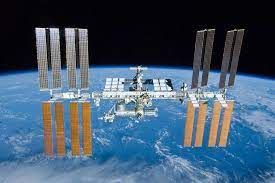
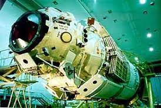
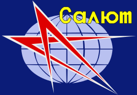

What is their actual mission?
The mission of the International Space Station is to enable long-term exploration of space and provide benefits to people on Earth. With six state-of-the-art laboratories, the Space Station will be the premiere research facility in space,
four times larger and more capable than any previous space station.

Why does the russian launched it?
The Zarya is a descendant of the TKS spacecraft designed for the Russian Salyut program, Although it was built by a Russian company, it is owned by the United States.

What is the Salyut programme?
The Zaryut Programmme was the first space station programme, undertaken by the Soviet Union. It involved a series of four crewed scientific research space stations and two crewed military reconnaissance space stations over a period of 15 years,
from 1971 to 1986. Two other Salyut launches failed. In one respect, Salyut had the task of carrying out long-term research into the problems of living in space and a variety of astronomical, biological and Earth-resources experiments,
and on the other hand the USSR used this civilian programme as a cover for the highly secretive military Almaz stations, which flew under the Salyut designation. Salyut 1, the first station in the programme, became the world's first crewed
space station.
